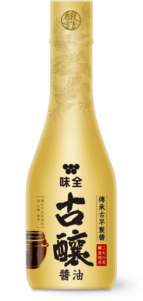

古釀暖心家宴
紅燒獅子頭
傳承幸福古早味
Colin 老師表示，「紅燒獅子頭」要到味，醬油是最重要的靈魂要角！重現古早味成功的關鍵，就在於選擇遵從古法270天釀造的「古釀醬油」來上色、調味，「黑豆的甘甜和黃豆的醬香不僅能襯托食材本身的甘甜味，還能讓料理吃起來的鮮美口感更有層次！」
紅燒獅子頭
肉丸
-
豬絞肉500克
-
薑泥1大匙
-
蔥花1.5大匙
-
鹽巴1.5小匙
-
白胡椒粉0.5小匙
-
糖1小匙
-
蛋液0.5顆
-
醬油適量
炒料
-
大蒜5瓣
-
白菜900克
-
味全古釀醬油1.5大匙
-
青蔥2枝
-
辣椒1根
作法
Step 1
首先將肉丸的材料全部均勻混合，將絞肉充分攪拌、摔打至出黏性。
Tips
製作肉丸時添加適量醬油能幫助上色、調味、帶出肉的甘甜味，讓料理吃起來更有層次味道。
Step 2
將雙手沾水(油)後，將絞肉揉成適量的大小。
Step 3
起油鍋，用 180 度將肉丸子炸至表面金黃後取出備用。
Step 4
另起油鍋，將大蒜下鍋爆香後，加入白菜拌炒，接著加入醬油調味。
Step 5
接著放入炸好的獅子頭一起煨煮至熟透、入味；起鍋前再放入適量的蔥段、辣椒就完成了。